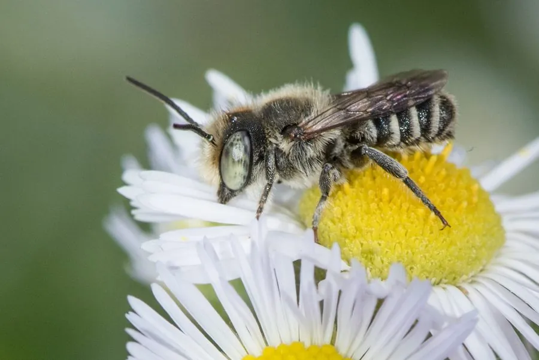

昆虫 · 动物界
切叶蜂 Megachile rotundata

重要的授粉蜂类，雌蜂用上颚切下圆形的小叶片，把叶片卷成筒状巢室，装入花粉和花蜜后产卵封口。
- 分类
- 门节肢动物门纲昆虫纲目膜翅目科切叶蜂科属切叶蜂属
- 栖息环境
- 草地、花园、农田与灌木丛，在竹筒、缝隙或人工巢管中筑巢
- 地理分布
- 欧亚大陆和北美洲，随苜蓿种植扩散到多地
- 保护级别
- 暂无评估
物种志
切叶蜂成虫体长 0.9–1.4 cm，体形粗壮。它的体色为灰褐至黑褐色，胸部密生浅色绒毛，腹部下方有用于收集花粉的毛刷；头部宽大，上颚发达，能剪下叶片；雌蜂有螫针，但一般不主动攻击。
切叶蜂广泛分布于欧亚大陆和北美洲，栖息于草地、花园、农田和灌木丛。雌蜂在竹筒、泥土缝隙或人工巢管中筑巢，用上颚从蔷薇、紫荆等植物上切下圆形或椭圆形叶片，卷成筒状巢室，先装入花粉和花蜜混合物，再产一枚卵并封口，幼虫孵化后取食储备食物。它是苜蓿等作物的重要授粉者，在北美被大量繁殖用于苜蓿种子生产；被切过的叶片边缘圆滑，常被误认为虫害。切叶蜂昼夜活动，是研究蜜蜂授粉与巢穴行为的常见对象。
形态与习性
- 食性成虫取食花蜜和花粉，幼虫吃储备花粉团
- 体长成虫 0.9–1.4 cm
- 筑巢用切下的叶片卷成筒状巢室
- 授粉苜蓿等作物的重要授粉者
- 繁殖每巢室产一枚卵，幼虫取食花粉和花蜜
- 识别被切叶片边缘圆滑，常被误认为虫害
趣味知识
- 切叶蜂会用上颚切下圆形叶片，卷成筒状巢室。
- 它切过的叶片边缘圆滑，常被误认为虫害。
- 切叶蜂是苜蓿等作物的重要授粉者，在北美被大量繁殖。
- 雌蜂把花粉和花蜜装进巢室后产卵，再封住开口。